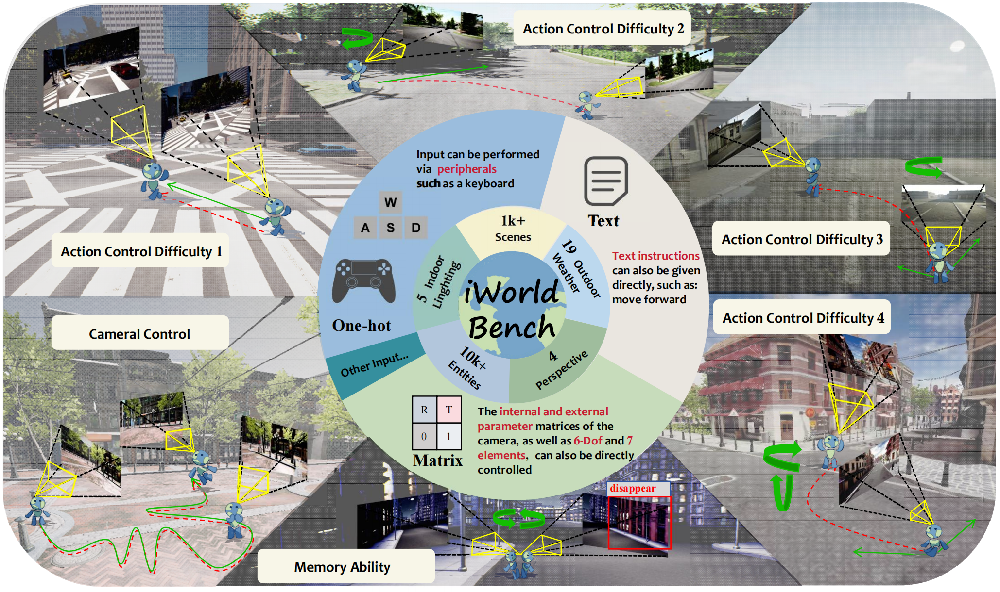
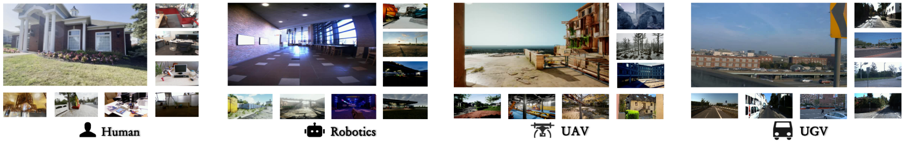
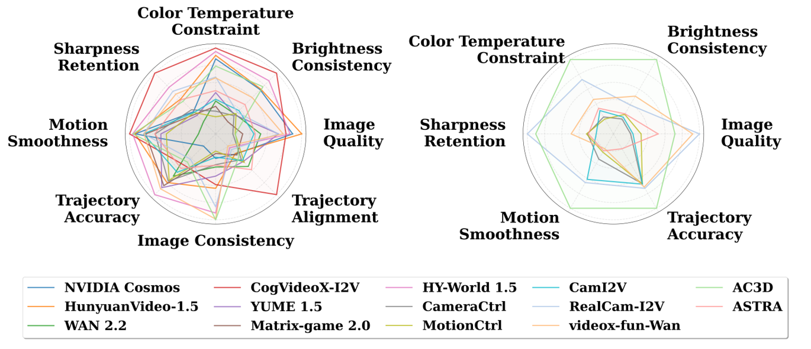

Achieving Artificial General Intelligence (AGI) requires agents that learn and interact adaptively, with interactive world models providing scalable environments for perception, reasoning, and action. Yet current research still lacks large-scale datasets and unified benchmarks to evaluate their physical interaction capabilities. To address this, we propose iWorld-Bench, a comprehensive benchmark for training and testing world models on interaction-related abilities such as distance perception and memory.

We construct a diverse dataset with 330k video clips and select 2.1k high-quality samples covering varied perspectives, weather, and scenes. As existing world models differ in interaction modalities, we introduce an Action Generation Framework to unify evaluation and design six task types, generating 4.9k test samples. These tasks jointly assess model performance across visual generation, trajectory following, and memory. Evaluating 14 representative world models, we identify key limitations and provide insights for future research.
| Benchmark | Field | Multiple Inputs | Interactive Task | Camera Control | Memory Ability | Multi-Scene | Multi-Perspective | All-Weather | # Examples |
|---|---|---|---|---|---|---|---|---|---|
| EWMBench | Manipulation Policies | ✗ | ✗ | ✗ | ✗ | ✗ | ✗ | ✗ | 2,100 |
| Movebench | Motion-Controllable Video | ✗ | ✗ | ✗ | ✗ | ✓ | ✓ | ✗ | 1,018 |
| WorldEval | Manipulation Policies | ✗ | ✗ | ✗ | ✗ | ✗ | ✗ | ✗ | 1,400 |
| VMbench | Motion-Controllable Video | ✗ | ✗ | ✗ | ✗ | ✓ | ✗ | ✗ | 1,050 |
| WorldModelBench | General World Model | ✗ | ✗ | ✗ | ✗ | ✗ | ✗ | ✗ | 67,000 |
| WorldBench | Motion-Controllable Video | ✗ | ✗ | ✗ | ✗ | ✗ | ✗ | ✗ | 425 |
| WorldScore | General World Model | ✓ | ✗ | ✓ | ✗ | ✓ | ✗ | ✗ | 3,000 |
| iWorld-Bench (Ours) | Interactive World Model | ✓ | ✓ | ✓ | ✓ | ✓ | ✓ | ✓ | 4,900 |
Our benchmark focuses on interactive world modeling with comprehensive capabilities. Unlike existing benchmarks that are mostly designed for general-purpose world models or embodied world models, iWorld-Bench specifically evaluates interactive world models' responsiveness to external action sequences. It supports multiple input modalities, action control, camera control, memory ability evaluation, multi-scene coverage, multi-perspective observations, and all-weather adaptability.
We introduce a unified and comprehensive framework that supports inputs from any modality of world models, enabling the design of action tasks and guiding the generation of world models.
The generation process of a world model can be decoupled into the following representation: Vt+1 = W(It, Ct), where Vt+1 represents the output of the world model, W denotes the specific world model, It represents the current scene frame, and Ct = [D, T, R, V] is a quadruple that controls the current frame It.
| Difficulty | ID | Direction | Keys |
|---|---|---|---|
| 1 | 0 | Stationary | - |
| 1 | 1 | Forward | W |
| 1 | 2 | Backward | S |
| 1 | 3 | Left | A |
| 1 | 4 | Right | D |
| 2 | 5 | Forward+Left | W+A |
| 2 | 6 | Forward+Right | W+D |
| 2 | 7 | Backward+Left | S+A |
| 2 | 8 | Backward+Right | S+D |
| 1 | 9 | Upward | - |
| 1 | 10 | Downward | - |
| 2 | 11 | Forward+Upward | - |
| 2 | 12 | Forward+Downward | - |
| 2 | 13 | Backward+Upward | - |
| 2 | 14 | Backward+Downward | - |
| 2 | 15 | Left+Upward | - |
| 2 | 16 | Left+Downward | - |
| 2 | 17 | Right+Upward | - |
| 2 | 18 | Right+Downward | - |
| 3 | 19 | Forward+Left+Upward | - |
| 3 | 20 | Forward+Right+Upward | - |
| 3 | 21 | Forward+Left+Downward | - |
| 3 | 22 | Forward+Right+Downward | - |
| 3 | 23 | Backward+Left+Upward | - |
| 3 | 24 | Backward+Right+Upward | - |
| 3 | 25 | Backward+Left+Downward | - |
| 3 | 26 | Backward+Right+Downward | - |
| Difficulty | ID | Direction | Keys |
|---|---|---|---|
| 1 | 0 | Stationary | - |
| 1 | 1 | Camera Up | ↑ |
| 1 | 2 | Camera Down | ↓ |
| 1 | 3 | Camera Right | → |
| 1 | 4 | Camera Left | ← |
| 2 | 5 | Camera Up+Right | ↑+→ |
| 2 | 6 | Camera Up+Left | ↑+← |
| 2 | 7 | Camera Down+Right | ↓+→ |
| 2 | 8 | Camera Down+Left | ↓+← |
| 1 | 9 | Clockwise | - |
| 1 | 10 | Counterclockwise | - |
| 2 | 11 | Camera Up+Clockwise | - |
| 2 | 12 | Camera Up+Counterclockwise | - |
| 2 | 13 | Camera Down+Clockwise | - |
| 2 | 14 | Camera Down+Counterclockwise | - |
| 2 | 15 | Camera Left+Clockwise | - |
| 2 | 16 | Camera Left+Counterclockwise | - |
| 2 | 17 | Camera Right+Clockwise | - |
| 2 | 18 | Camera Right+Counterclockwise | - |
| 3 | 19 | Camera Up+Right+Clockwise | - |
| 3 | 20 | Camera Up+Right+Counterclockwise | - |
| 3 | 21 | Camera Up+Left+Clockwise | - |
| 3 | 22 | Camera Up+Left+Counterclockwise | - |
| 3 | 23 | Camera Down+Right+Clockwise | - |
| 3 | 24 | Camera Down+Left+Counterclockwise | - |
| 3 | 25 | Camera Down+Right+Clockwise | - |
| 3 | 26 | Camera Down+Left+Counterclockwise | - |
Based on the Action Generation Framework, we designed six types of tasks to comprehensively evaluate the interaction capabilities of world models:
| Task Type | Description | Difficulty | # Tasks |
|---|---|---|---|
| Action Control Difficulty 1 | Basic tasks including stationary and 9 basic actions | D = 1 | 1,000 |
| Action Control Difficulty 2 | Two-degree-of-freedom tasks covering 24 actions | D = 2 | 1,000 |
| Action Control Difficulty 3 | Three-degree-of-freedom tasks covering 32 actions | D = 3 | 1,000 |
| Action Control Difficulty 4 | Four-degree-of-freedom complex tasks covering 16 actions | D = 4 | 1,000 |
| Memory Ability | Cyclic paths requiring model to visit same location | - | 200 |
| Camera Following | Trajectory following using camera parameter files | - | 700 |
We evaluate low-level visual distortions by calculating the normalized average MUSIQ score across all frames to reflect fundamental rendering fidelity.
We utilize motion priors from frame interpolation models to evaluate the reconstruction quality of sampled frames via LPIPS, SSIM, and MSE, effectively identifying unnatural jitters or physical inconsistencies.
To quantify logical loop-closure in reciprocal tasks, we evaluate the pixel-wise consistency of symmetric frame pairs relative to the temporal midpoint. This metric effectively captures memory decay or structural logic failure during extended temporal reasoning.
We established a comprehensive data processing protocol to clean and standardize 12 high-quality datasets, unifying the original coordinate systems and intrinsic/extrinsic parameter formats. Additionally, we designed an automated collection and filtering pipeline to gather 100k 1080P video clips from 18 high-quality environments across 4 simulators. Combined with vision-language models, all video clips were uniformly annotated, resulting in a high-quality dataset containing 330k video clips.

| Dataset | Year | Domain | Pose Representation | Viewpoint | Clip Count | Selected [N1, N2] |
|---|---|---|---|---|---|---|
| KITTI | 2012 | Autonomous driving | External parameter matrix | UGV | 281 | [20, 5] |
| NuScenes | 2019 | Autonomous driving | Seven-element | UGV | 1,000+ | [15, 5] |
| Waymo | 2019 | Autonomous driving | External parameter matrix | UGV | 453 | [15, 5] |
| TUM-RGB-D | 2011 | 3D reconstruction | Seven-element | Human, UGV | 405 | [15, 5] |
| 7-Scenes | 2013 | 3D reconstruction | External parameter matrix | Human | 516 | [30, 10] |
| RealEstate-10K | 2018 | 3D reconstruction | External parameter matrix | Human, UGV | 20,000+ | [200, 147] |
| Princeton365 | 2019 | 3D reconstruction | External parameter matrix | Human | 365 | [29, 2] |
| DL3DV-10K | 2023 | 3D reconstruction | External parameter matrix | Human | 10,000+ | [60, 10] |
| NCLT Dataset | 2016 | Robotics inspection | 6-DoF | UGV | 10,000+ | [60, 21] |
| TartanGround | 2024 | Robotics inspection | Seven-element | UGV | 3,000+ | [56, 10] |
| TartanAir-V2 | 2024 | Drone inspection | Seven-element | UAV | 2,000+ | [100, 40] |
| SpatialVid | 2025 | World model | 6-DoF | Human, UGV, UAV | 180,000 | [100, 40] |
| Total | - | - | - | - | 230,000+ | [700, 200] |
We selected 14 representative interactive world models for evaluation, including five text-conditioned camera control models, two one-hot-conditioned camera control models, and seven models with camera control via explicit intrinsics and extrinsics.
| Method | Rank | Avg. ↑ | Generation Quality | Trajectory Following | Memory Ability | |||||
|---|---|---|---|---|---|---|---|---|---|---|
| Image Quality ↑ | Brightness Consistency ↑ | Color Temperature ↑ | Sharpness Retention ↑ | Motion Smoothness ↑ | Trajectory Accuracy ↑ | Memory Symmetry ↑ | Trajectory Alignment ↑ | |||
| Camera Control via Text | ||||||||||
| NVIDIA Cosmos | 7 | 0.6275 | 0.6778 | 0.6952 | 0.7170 | 0.4363 | 0.9907 | 0.4955 | 0.3738 | 0.6419 |
| HunyuanVideo-1.5 | 3 | 0.7188 | 0.7128 | 0.7027 | 0.7477 | 0.5545 | 0.9908 | 0.6844 | 0.6336 | 0.6449 |
| WAN 2.2 | 12 | 0.5731 | 0.5545 | 0.3886 | 0.3411 | 0.3428 | 0.9557 | 0.6514 | 0.4480 | 0.5703 |
| CogVideoX-I2V | 5 | 0.6963 | 0.6521 | 0.8988 | 0.8129 | 0.7951 | 0.9938 | 0.5950 | 0.6010 | 0.4084 |
| YUME 1.5 | 8 | 0.6209 | 0.6232 | 0.3810 | 0.4165 | 0.4023 | 0.9765 | 0.7113 | 0.5276 | 0.5988 |
| Camera Control via One-hot Encoding | ||||||||||
| Matrix-game 2.0 | 13 | 0.5663 | 0.4851 | 0.2963 | 0.2937 | 0.4149 | 0.9848 | 0.7008 | 0.3311 | 0.6362 |
| HY-World 1.5 | 1 | 0.7873 | 0.6675 | 0.8051 | 0.7819 | 0.6634 | 0.9921 | 0.7472 | 0.8481 | 0.6776 |
| Camera Control via Intrinsics and Extrinsics | ||||||||||
| CameraCtrl | 11 | 0.5762 | 0.4473 | 0.3717 | 0.2511 | 0.4545 | 0.9796 | 0.6778 | 0.4279 | 0.6097 |
| MotionCtrl | 14 | 0.5486 | 0.4562 | 0.3980 | 0.2012 | 0.4294 | 0.9735 | 0.6730 | 0.3098 | 0.5932 |
| CamI2V | 10 | 0.5765 | 0.5284 | 0.4343 | 0.3568 | 0.4297 | 0.9861 | 0.6314 | 0.3631 | 0.6038 |
| RealCam-I2V | 6 | 0.6865 | 0.6227 | 0.4130 | 0.5547 | 0.6269 | 0.9860 | 0.5630 | 0.7948 | 0.6668 |
| videox-fun-Wan | 2 | 0.7474 | 0.6410 | 0.5972 | 0.5473 | 0.5998 | 0.9858 | 0.7172 | 0.9009 | 0.6876 |
| AC3D | 4 | 0.7149 | 0.4573 | 0.7307 | 0.6524 | 0.5332 | 0.9919 | 0.5785 | 0.9068 | 0.6250 |
| ASTRA | 9 | 0.5980 | 0.5335 | 0.5091 | 0.4338 | 0.5488 | 0.9799 | 0.6115 | 0.4323 | 0.5518 |
| Method | Generation Quality | Trajectory Following | ||||
|---|---|---|---|---|---|---|
| Image Quality ↑ | Brightness Consistency ↑ | Color Temperature ↑ | Sharpness Retention ↑ | Motion Smoothness ↑ | Trajectory Tolerance ↑ | |
| Camera Control via Intrinsics and Extrinsics | ||||||
| CameraCtrl | 0.3980 | 0.3497 | 0.2008 | 0.4211 | 0.9659 | 0.7099 |
| MotionCtrl | 0.4270 | 0.3924 | 0.1810 | 0.4256 | 0.9622 | 0.7120 |
| CamI2V | 0.4046 | 0.3674 | 0.2605 | 0.3830 | 0.9766 | 0.7143 |
| RealCam-I2V | 0.5889 | 0.4777 | 0.5521 | 0.6838 | 0.9783 | 0.7480 |
| videox-fun-Wan | 0.5701 | 0.5584 | 0.3659 | 0.4925 | 0.9604 | 0.7381 |
| AC3D | 0.5208 | 0.8927 | 0.7404 | 0.6472 | 0.9919 | 0.9091 |
| ASTRA | 0.4743 | 0.3972 | 0.2819 | 0.4171 | 0.9615 | 0.4286 |

If you find this work useful, please consider citing:
@inproceedings{iworldbench2026,
title={iWorld-Bench: A Benchmark for Interactive World Models with a Unified Action Generation Framework},
author={Anonymous Authors},
year={2026},
organization={Anonymous Organization}
}